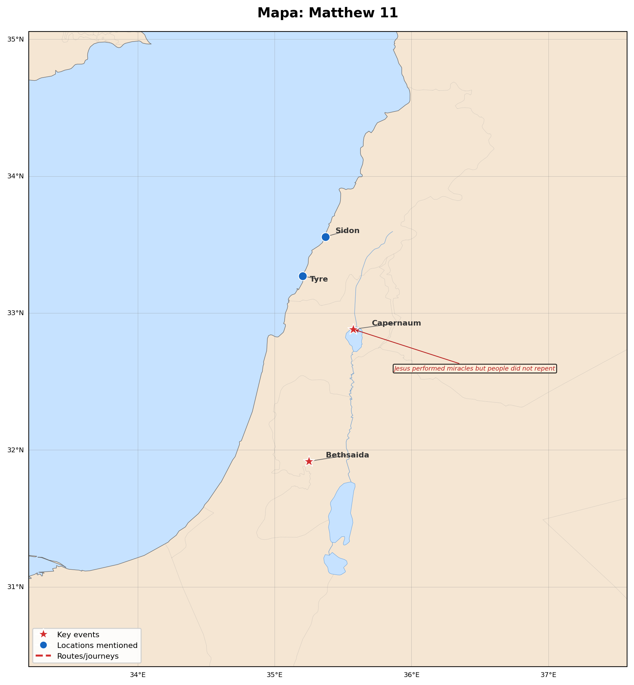

Matthew 11
Estudio interactivo · MorphGNT
30
Versículos
412
Patrística
76
Refs. Cruzadas
7
Lugares
🗺️ Mapa Geográfico

Click para ampliar
📖 Texto
🔗 Referencias Cruzadas
📅 Eventos
🗺️ Manuscritos — Mapa y Línea de Tiempo
×